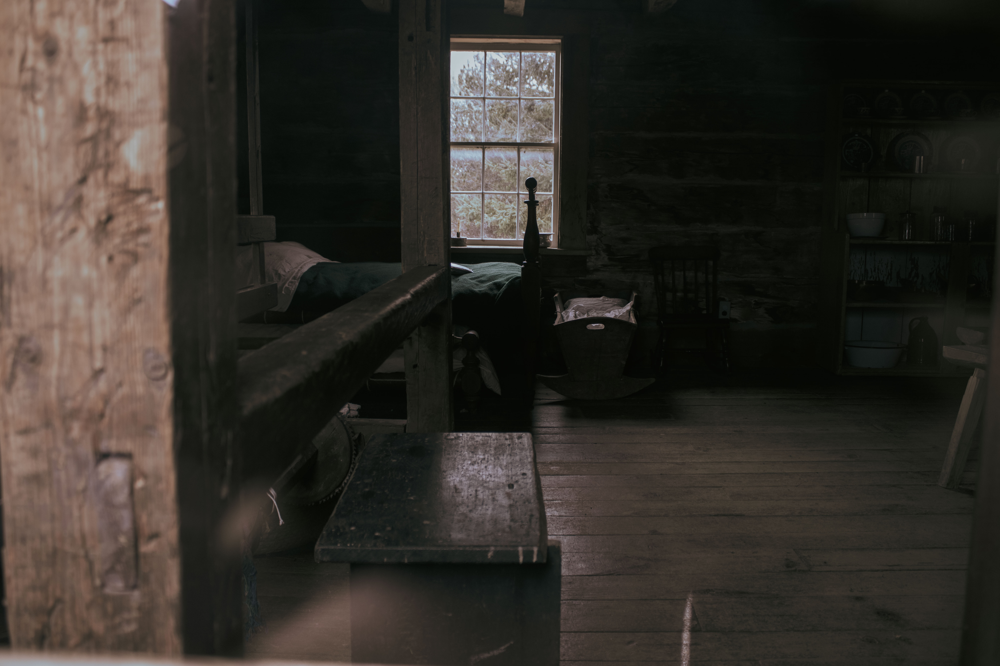
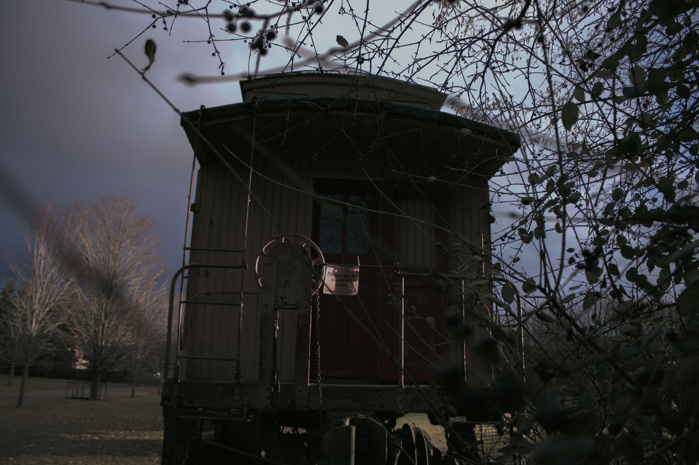
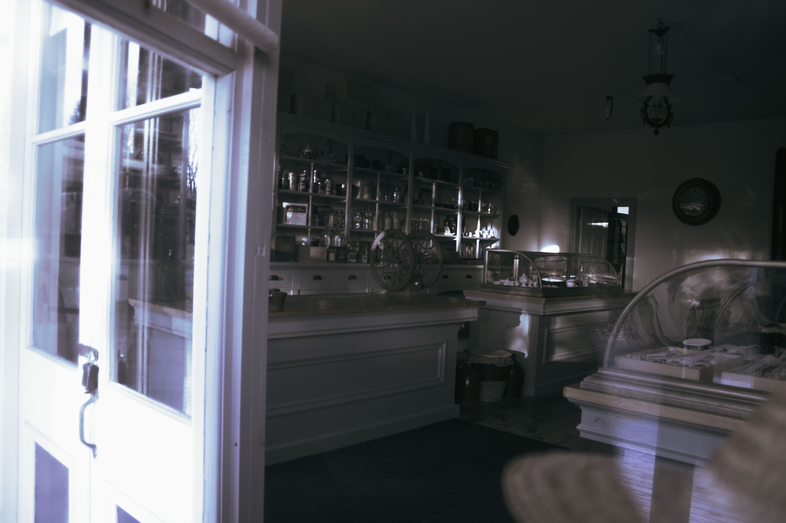
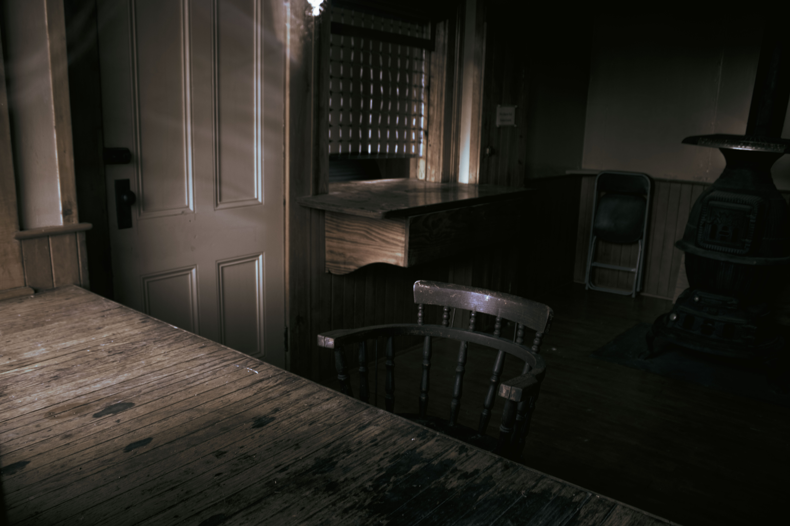
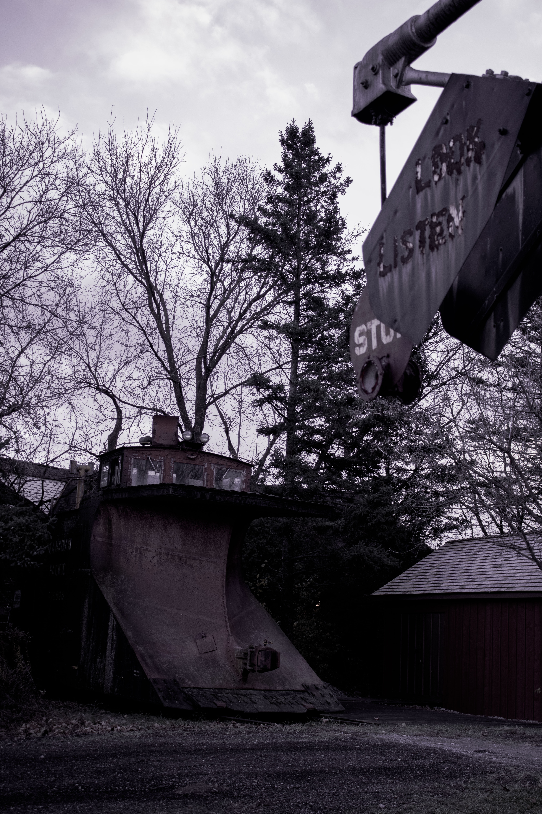

This photo is taken at a museum. This museum collects old buildings from arould, gathers them all to this park and display together. This picture is about an old house's bedroom. Using the window in the middle as the target to draw attemtion, and through the light direct, and oject's edge -- for example the wood frame, the bed to spread attentions all over other parts of the photo.

This image is about an abandoned old train, the weather when the photo was taken were cloudy, trees are losing all its leaves due to low temperature. All these enhanced the feeling of abandoned and lonely, like music that will be played in the movie when the main character is left behind by everyone.

This is an old shop, there were still coffe beans on the shelf. It has been closed for a long time, all the light has shut down -- silent and empty. But I then notice sun shine from outside has light up part of it, giving a second of illusion like it is still alive, like if at any second it will magically start to work as it used to be from that far hundreds of years ago.

This is an old train ticket office. What attracts me to take a photo is the light that generously spread in. It is old and abandoned, emppty and silent. But imagine back in those years when it is still in use, hundreds of people will walk through the window, staffs will chat and laugh in the room. And at this second, when the light lights up this empty room again, can you hear that crowded noises and hear all those chattings and laughs again? Has the light replaced those people and staffs, and reopened this empty office again?

This is a collage animation I made. Based on a quote selected from the story of Peter Pan. With the theme of Peter Pan, I designed a storyline, and uses images I could find to make collages and use these collages to form an animation. This project tasked and proves my ability of video editing, image editing, and storytelling.

This animation is based on the poem "I Wandered Lonely As A Cloud" by William Wordsworth. This project tasks me to design a storyline to explain the meaning of the poem. This requires ability to understand, and translate the explaination into an understandable figurative way. And the whole video is done by hand drawn, which can display and prove my ability of drawing and painting.

This is a poster I made. It is created without any design tools. Mainly using calender and Miro -- an online whiteboard. The theme of the poster is about chinese education that I've experienced. As I have know, many compatriots will critique the inhumane, heavy, depressing, and harmful education. I won't deny the suffer it brings to me, but I also want to mention those happy and sweet moments I have. With friends and classmates living with you, complaining about the homework and school together, having a precious short walk in the gym after finishing the homework, giving each other support and prainse... These moments is what supports me to hold on and go through the suffering chinese education. And we have a proverb that says, “The sea of learning is endless", so I decide to use the calender we have for a week to play as the sea, and my friensds and me on a little boat to show that because of each other, we can go through this endless sea.

This project is a poster I made for the animation video I made. It involved AR in this project, I need to make a smoothly looping gif poster, and connect it to the qr code on the poster, so when you scan it with your phone, you'll see the poster starting to move.

This is another perspective of the abandoned old train. Also focused on it's emptiness and lonelyness. Moreover, this time I used the old sign as the a foreground object, to create sense of space in this photo using depth of field.